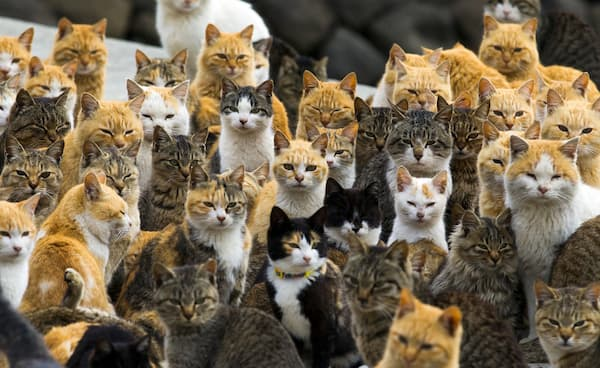
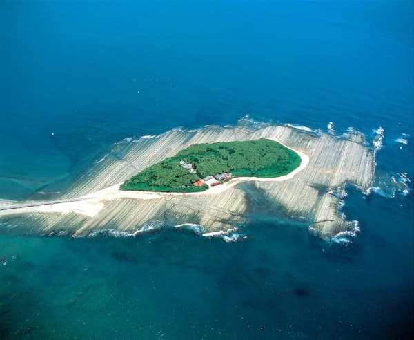

Play with the Island Cats
Visitors can enjoy spending time with the friendly cats, bringing treats and watching them roam freely around the island.
Spend Time on The Beach
Aoshima is an Island with beautiful beaches. Take a peaceful walk or rest on the beach while cats wander around nearby.
Visit Aoshima Shrine

One of the most popular destinations on Aoshima Island is the Aoshima Shrine. It is a popular attration to young couples as it is a shrine dedicated to love and marriage